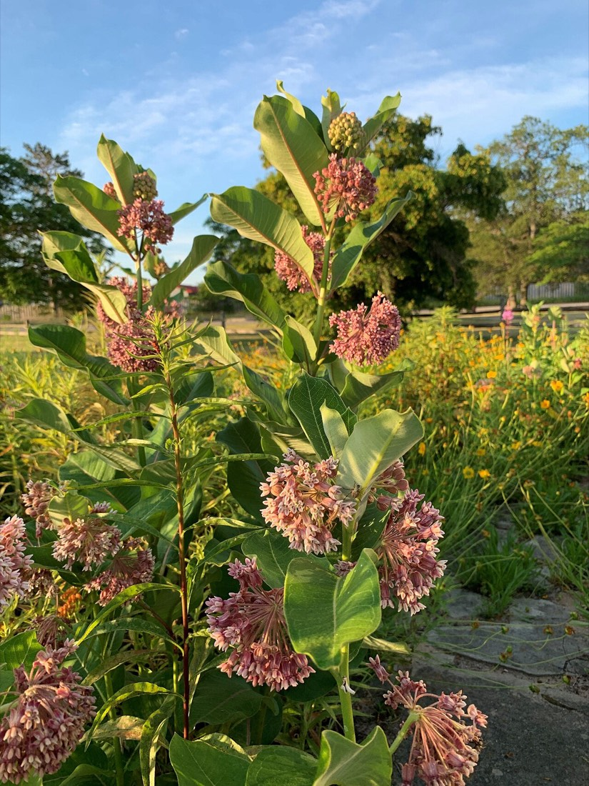
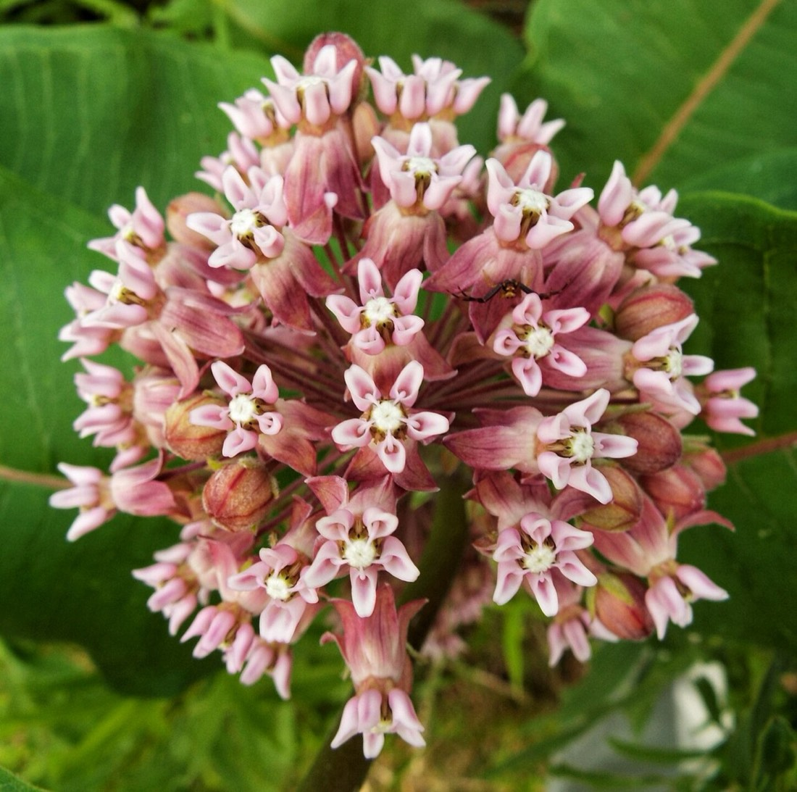

Common Milkweed
Asclepias syriaca
- Kind
- herb · Apocynaceae
- Native to Vermont
- native in part (Go Botany: some are introduced)
- Legal status
- Not on the Agency of Agriculture quarantine list (effective 2026-06-16; read through a summarizing fetch 2026-10-31; the list's Watch List was not read). (checked 2026-10-31)
- Look-alikes
- Purple milkweed (Asclepias purpurascens)
Pictures


Names
Common milkweed, Asclepias syriaca, in the family Apocynaceae.
Range and habitat
Go Botany lists human-disturbed habitats, forest edges, and meadows and fields, says it is "found in fields and roadsides in all New England states", and records it as present in Vermont. It marks the plant as occurring only in non-wetlands (UPL). Go Botany answers "Yes and no (some introduced)" on native status and gives no separate Vermont status; Minnesota Wildflowers calls it native and says there is no real reason to treat it as introduced to North America.
How to identify (by season; look-alikes and the key difference)
- Height and leaves: 100 to 150 cm tall (Go Botany). Leaves simple, opposite and smooth-edged, with blades 150 to 230 mm long and 50 to 90 mm wide, oblong or ovate, with a pointed tip.
- Flowers: in a rounded cluster (a simple umbel) 50 to 100 mm wide at the upper leaf joints; petals 7 to 10 mm long, with a crown of lobes 4 to 5 mm long in the middle. Go Botany lists petal and sepal colors from green-brown to pink-red and purple; the Lady Bird Johnson Wildflower Center describes the clusters as pink to purplish, slightly drooping and fragrant, usually about 30 flowers and sometimes up to 100, with white or purple hoods and horns.
- Look-alike (Go Botany): purple milkweed (Asclepias purpurascens) has hoods 5 to 7 mm long and red-purple to purple, and smooth seed pods. Common milkweed has hoods 4 to 5 mm long and light purple, and its pods are covered in cone-shaped bumps.
Through the year
Dates are typical for Vermont and shift with elevation and year; "approximate" means the source gave a season and the dates are a translation of it.
| When | What | Look for | What to do | Dates |
|---|---|---|---|---|
| Jun 1 to Aug 31 | flower (identify) | Rounded clusters of small pink to purplish flowers at the upper leaf joints of a tall plant with big, opposite, oblong leaves. Flowers appear after the leaves. | - | approximate |
Role and management
The sources read give no mowing, grazing or control advice for this plant, and no statement about its value to wildlife.
What helps it thrive (light, soil and moisture, and how it is kept)
- Light: sun; not shade tolerant and needs lots of sunlight (Lady Bird Johnson Wildflower Center).
- Soil and water: moist soils; medium to fine sandy, clayey or rocky calcareous soils are typical, and it also grows in well-drained loamy soils.
- Use to others: the larval host plant of the monarch; especially valuable to native bees, bumble bees and honey bees. Monarch caterpillars that feed on it take up chemicals that make them toxic to birds. See Pollinator Habitat on Forest and Field.
Legal status
Not on the Agency of Agriculture quarantine list as read on 2026-10-31 (effective 2026-06-16; the list's Watch List was not read). No other legal status was looked up. The quarantine list covers introduced plants.
Sources
- Native Plant Trust, Go Botany, Asclepias syriaca: https://gobotany.nativeplanttrust.org/species/asclepias/syriaca/ (read through a summarizing fetch 2026-10-31)
- Minnesota Wildflowers, Common Milkweed (bloom season, habitat and origin only; a Minnesota page, used here as a stand-in for typical bloom time): https://www.minnesotawildflowers.info/flower/common-milkweed (read through a summarizing fetch 2026-10-31)
- Lady Bird Johnson Wildflower Center, Native Plants Database, Asclepias syriaca: https://www.wildflower.org/plants/result.php?id_plant=ASSY (read through a summarizing fetch 2026-10-31)
- University of Vermont, Vermont Bird and Pollinator Friendly Perennials (a list with bloom months): https://www.uvm.edu/sites/default/files/Agriculture/Vermont-Bird-and-Pollinator-Friendly-Perennials.pdf (the months were quoted in a search summary only; the file itself could not be read here)
- Vermont Agency of Agriculture, Food and Markets, quarantine list (effective June 16, 2026): https://agriculture.vermont.gov/node/11701 (read through a summarizing fetch 2026-10-31)
- Lady Bird Johnson Wildflower Center, Native Plants of North America database, Asclepias syriaca: https://www.wildflower.org/plants/result.php?id_plant=ASSY (read through a summarizing fetch 2026-11-01)
What this page is based on
Kind of source: mixed (a regional flora, a Minnesota wildflower guide, the state quarantine list)
What was read: Go Botany species page and the Minnesota Wildflowers page (bloom season, habitat and origin only) each read through a summarizing fetch on 2026-10-31; the Agency of Agriculture quarantine list read the same way. Go Botany gives no bloom months for this plant. The calendar window translates Minnesota's bloom season into month ends; a University of Vermont list (quoted in a search summary only) also gives June to August, so the window rests on two sources that agree. Pictures: the Wikimedia Commons description and the photo itself were looked at. The Lady Bird Johnson Wildflower Center page was read through a summarizing fetch for the flower description. Growing conditions (light, soil moisture, soil) added 2026-11-01 from the Lady Bird Johnson Wildflower Center Native Plants database page for the species (summarizing fetch); those are garden and wild-site ratings for the species in general, not a Vermont survey.
Last checked: 2026-10-31
Vermont land and forest reference, built 2026-11-01. Rules and dates here are summaries, not legal advice; dates shift with elevation and year. Photo and recording credits · Note: _reference/US-VT/Species/Common Milkweed.md